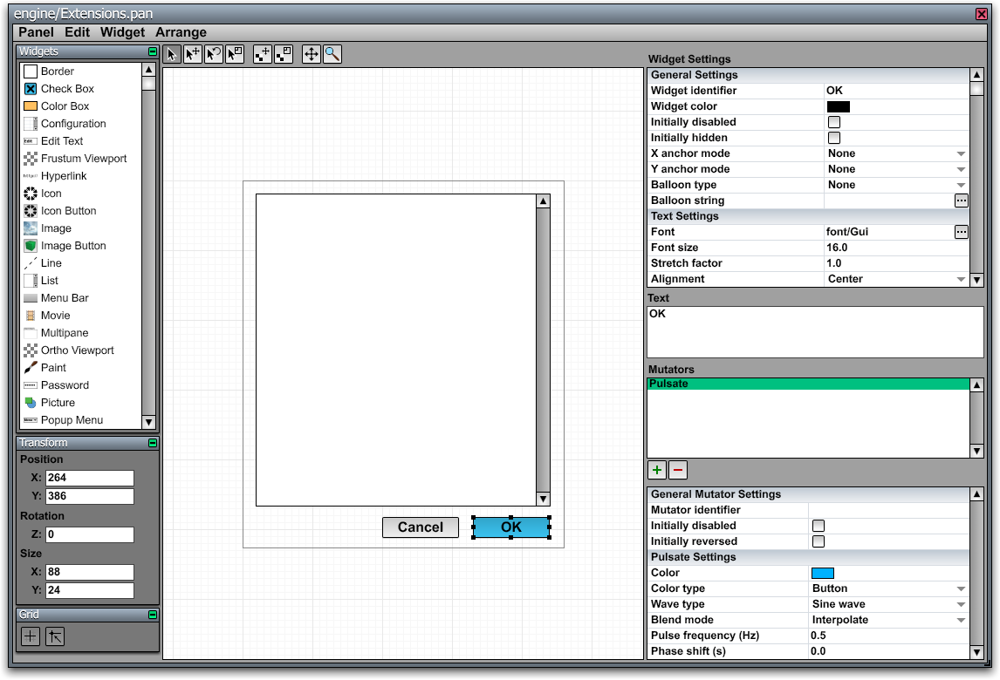

Panel Editor

The Panel Editor, shown in the image to the right, is a tool included with the C4 Engine that is used to create and edit graphical user interfaces of two different types. First, the panel editor can be used to create windows, dialogs, and heads-up displays that are rendered on top of a game on a two-dimensional desktop, and these interfaces are saved in individual panel resource files. Second, the panel editor can be used to create interactive in-game interface panels that are saved as part of the world in which they exist.
An interface panel is composed of a set of widgets, and many different types of widgets, including simple text and image widgets and more complex widgets like list boxes, are built into the engine. Custom widget subclasses can be defined in the game code and registered with the engine so they appear in the Panel Editor.
Each widget can have one or more sprockets attached to it that produce animations of various kinds. Widgets belonging to in-game interface panels can also have scripts attached to them that get executed when the user interacts with the widgets.
Creating and Editing Panels
Desktop Panel Resources
New panel resources can be created, and existing panel resources can be edited, by choosing the New Panel or Open Panel commands in the C4 Menu. The panel command can also be entered in the Command Console to open an existing panel resource.
The dimensions, window title, and various flags for a desktop user interface panel are set by choosing Window Settings from the Panel menu.
After saving the panel, the created .pan file can then be used in your game with the Window class.
In-Game Panel Effects
An interface panel can be created in the World Editor by using the Panel Effect tool in the Effects Page. When a panel effect is selected, the Panel Editor can be opened for it by choosing “Edit Script or Panel” from the Node menu, which has the shortcut Ctrl-E. The Panel Editor is also accessible from the Controller pane in the Node Info window.
The Panel Effect tool draws a rectangular region representing the boundary of the panel. When a panel is first created, it automatically has a Panel Controller assigned to it that can be accessed under the Controller pane in the Node Info window.
An in-game panel possesses both its physical size in the world, as drawn with the Panel Effect tool, and an internal interface resolution. The resolution is adjusted in the properties for the Panel Controller. The interface resolution determines how big the virtual screen is on which items will be placed with the Panel Editor. Whatever resolution is chosen, the entire panel is fit precisely into the physical dimensions determined by the rectangle drawn in the World Editor. Thus, it's usually desirable to match the aspect ratios of both the panel's physical size and its interface resolution to avoid stretching the contents of the panel.
Under the Panel tab in the Node Info window, there are three check boxes that affect how the panel is rendered.
- The Apply depth offset flag causes the panel to be rendered with a small depth offset forward. This avoids z-fighting artifacts that could otherwise appear if a panel was drawn in the same plane as background geometry.
- The Render two-sided flag causes the panel to be rendered regardless of on which side of the panel's plane the camera currently is. This lets the panel be seen from the back if it's drawn on a transparent surface or floating in mid-air.
- The Render with fog flag allows fog to be rendered over a panel. This must be explicitly enabled in order for a panel to be rendered in a fogged environment.
A panel effect can be made interactive by assigning the Interaction property to it under the Properties pane of the Node Info window. An interactive panel can display a cursor on top of the panel while the user is engaged with it. The cursor is drawn as a vector icon, which is specified in the panel controller's settings in the Node Info window.
Panel Editor Tools
There are eight tool buttons at the top of the Panel Editor window, and they have the following uses. In addition to clicking on the tool button, some of these tools can also be selected by pressing the number key shown in the table.
|
Icon |
Shortcut |
Function |
|
|
1 |
Select Widgets. This tool can be used to safely select items without the possibility of accidentally moving them. To select a single widget inside a group instead of the group itself, hold in the Control key while clicking. |
|
|
2 |
Move Widgets. Selects and moves widgets. Holding down the Shift key while moving constrains the movement to a single axis. |
|
|
3 |
Rotate Widgets. Selects and rotates widgets. Click and drag a handle for a selected widget to rotate. Holding down the Shift key while rotating snaps the angle to 45 degree increments. |
|
|
4 |
Resize Widgets. Selects and resizes widgets. Click and drag a handle for a selected widget to resize. Holding down the Shift key while resizing constrains the proportional width and height. |
|
|
|
Offset Texture. Offsets the texture within the selected image widgets. |
|
|
|
Scale Texture. Scales the texture within the selected image widgets. |
|
|
6 |
Scroll. Scrolls the panel viewport. Holding down the Alt key temporarily selects the scroll tool. |
|
|
7 |
Zoom. Zooms the panel viewport. Dragging vertically with this tool zooms in and out of a viewport. Using the mouse wheel with any other tool also zooms. |
Pages
The following table describes the individual pages that are currently available in the Panel Editor.
|
Page |
Description |
|
Widgets. To place a new widget in the panel, select a type of widget from the list in this page and drag out a rectangle in the viewport. | |
|
Transform. This page allows you to enter the position, rotation angle, and size of a selected widget. The position and size are measured in pixels, and the rotation angle is measured in degrees. | |
|
|
Grid. The toggle buttons in this page control grid visibility and whether grid snapping is enabled. |

{kind=link}
{kind=link}
{kind=link}
Widget Settings
When one or more widgets are selected, their properties can be edited on the right side of the window. Different properties are shown depending on the types of the selected widgets, but all widgets have an identifier, a color, two flags indicating whether the widget is initially disabled or hidden, and settings for a help balloon. Settings that differ among multiple selected widgets are displayed in an indeterminate state until they are modified.
See the list of widgets for a description of the settings that are specific to each type of widget.
Common Settings
- The Widget identifier is a string of up to 15 characters used to identify widgets from C++ code or a script. It can be left blank for widgets that will not be referenced. This identifier does not need to be unique. When a script uses an identifier to operate on widgets in a panel, it affects all widgets within the panel having that same widget identifier.
- TheWidget color is the primary color used by a widget. The exact way in which this color is used depends on the type of the widget.
- The Initially disabled check box indicates whether the widget is initially disabled so that it can't be clicked.
- The Initially hidden check box indicates whether the item is initially hidden so that it isn't rendered.
- The Balloon type menu specifies what kind of help balloon is assigned to the widget.
- The Balloon string is a string that is interpreted based on the type of balloon. If the balloon type is a text string, then the balloon string is displayed directly in the help balloon for the widget. If the balloon type is a panel resource, then the balloon string is the name of the panel resource that gets loaded and displayed in the balloon.
Menu Commands
Panel Menu
|
Command |
Shortcut |
Description |
|
Close |
Ctrl-W |
Closes the panel editor window. |
|
Save Panel |
Ctrl-S |
Saves the current panel. |
|
Save Panel As... |
Ctrl-Shift-S |
Saves the current panel after prompting for a file name. (Available only for panel resources, not in-game panel effects.) |
|
Window Settings... |
Ctrl-P |
Opens a dialog in which the window dimensions, its title, and various options can be set. (Panel resources only.) |
Edit Menu
|
Command |
Shortcut |
Description |
|
Undo |
Ctrl-Z |
Undoes the last action. (Supports multiple undo.) |
|
Cut |
Ctrl-X |
Cuts the current selection to the clipboard. |
|
Copy |
Ctrl-C |
Copies the current selection to the clipboard. |
|
Paste |
Ctrl-V |
Pastes the contents of the clipboard to the panel. |
|
Clear |
Delete |
Deletes the current selection. |
|
Select All |
Ctrl-A |
Selects every widget in the panel. |
|
Duplicate |
Ctrl-D |
Duplicates the selected widgets. |
Widget Menu
|
Command |
Shortcut |
Description |
|
Bring to Front |
Ctrl-Shift-] |
Brings the selected widgets to the front so that they are rendered last. |
|
Bring Forward |
Ctrl-] |
Brings each selected widget forward ahead of the next widget that would be rendered. |
|
Send Backward |
Ctrl-[ |
Sends each selected widget backward behind the previous widget that would be rendered. |
|
Send to Back |
Ctrl-Shift-[ |
Sends the selected widgets to the back so that they are rendered first. |
|
Hide Selection |
Ctrl-H |
Hides the selected widgets. |
|
Unhide All |
Ctrl-Shift-H |
Shows all widgets in the panel. |
|
Lock Selection |
Ctrl-L |
Locks the selected widgets so that they can no longer be selected. |
|
Unlock All |
Ctrl-Shift-L |
Unlocks all widgets in the panel. |
|
Group Selection |
Ctrl-G |
Groups the selected widgets. (No groups can be selected.) |
|
Ungroup Selection |
Ctrl-Shift-G |
Ungroups the selected groups. |
|
Reset Rotation |
Ctrl-R |
Removes any rotation from the selected widgets. |
|
Reset Texcoords |
Ctrl-T |
Resets the texture coordinates for selected image widgets to the default values. |
|
Auto-scale Texture |
Ctrl-F |
Scales, or “fixes”, the texture coordinates of selected image widgets so that the aspect ratio is 1:1. |
|
Edit Script |
Ctrl-E |
Opens the script editor for the selected widget. (Available only for in-game panel effects.) |
|
Delete Script |
|
Removes any scripts from the selected widgets. |
Arrange Menu
|
Command |
Shortcut |
Description |
|
Nudge Left |
Ctrl-Left |
Nudges the selected widgets one pixel to the left. |
|
Nudge Right |
Ctrl-Right |
Nudges the selected widgets one pixel to the right. |
|
Nudge Up |
Ctrl-Up |
Nudges the selected widgets one pixel upward. |
|
Nudge Down |
Ctrl-Down |
Nudges the selected widgets one pixel downward. |
|
Align Left Sides |
Ctrl-Shift-Left |
Aligns the left sides of the selected widgets to the leftmost point in the selection. |
|
Align Right Sides |
Ctrl-Shift-Right |
Aligns the right sides of the selected widgets to the rightmost point in the selection. |
|
Align Top Sides |
Ctrl-Shift-Up |
Aligns the top sides of the selected widgets to the topmost point in the selection. |
|
Align Bottom Sides |
Ctrl-Shift-Down |
Aligns the bottom sides of the selected widgets to the bottommost point in the selection. |
|
Align Horizontal Centers |
|
Aligns the horizontal centers of the selected widgets to the average between the leftmost and rightmost points in the selection. |
|
Align Vertical Centers |
|
Aligns the vertical centers of the selected widgets to the average between the topmost and bottommost points in the selection. |